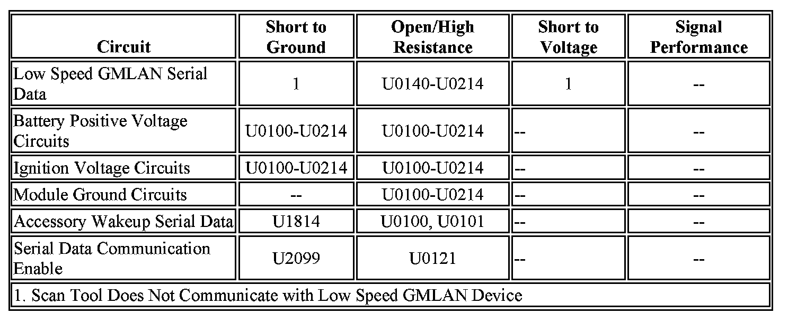

U0200
DTC U0100 - U02FF
Diagnostic Instructions
- Perform the Diagnostic System Check - Vehicle prior to using this diagnostic procedure Initial Inspection and Diagnostic Overview.
- Review Strategy Based Diagnosis for an overview of the diagnostic approach Initial Inspection and Diagnostic Overview.
- Diagnostic Procedure Instructions provides an overview of each diagnostic category Initial Inspection and Diagnostic Overview.
DTC Descriptors
DTC U0100-U0299: Lost Communication With Module
DTC U0100 00: Lost Communication With Engine/Powertrain Control Module (ECM/PCM)
DTC U0101 00: Lost Communication With Transmission Control Module (TCM)
DTC U0102 00: Lost Communication With Transfer Case Control Module
DTC U0104 00: Lost Communication With Cruise Control Module
DTC U0106 00: Lost Communication With Glow Plug Control Module
DTC U0109 00: Lost Communication With Fuel Pump Control Module
DTC U0121 00: Lost Communication With Anti-Lock Brake System (ABS) Control Module
DTC U0122 00: Lost Communication With Vehicle Dynamics Control Module
DTC U0132 00: Lost Communication With Suspension Control Module
DTC U0137 00: Lost Communication With Trailer Brake Control Module
DTC U0140 00: Lost Communication With Body Control Module
DTC U0141 00: Lost Communication With Body Control Module - A
DTC U0151 00: Lost Communication With Vehicle Restraint Control Module
DTC U0155 00: Lost Communication With Instrument Panel Cluster (IPC) Control Module
DTC U0159 00: Lost Communication With Park Assist Control Module
DTC U0160 00: Lost Communication With Audible Alert Control Module
DTC U0164 00: Lost Communication With HVAC Control Module
DTC U0165 00: Lost Communication With HVAC Control Module - Rear
DTC U0168 00: Lost Communication With Security Control Module
DTC U0170 00: Lost Communication With Restraint System Sensor A (Passenger Presence System)
DTC U0172 00: Lost Communication With Restraint System Sensor C (Rollover Sensor)
DTC U0184 00: Lost Communication With Radio
DTC U0186 00: Lost Communication With Audio Amplifier
DTC U0198 00: Lost Communication With Telematic Control Module
DTC U0199 00: Lost Communication With Driver Door Control Module
DTC U0200 00: Lost Communication With Passenger Door Control Module
DTC U0214 00: Lost Communication With Remote Function Actuator (RFA)
DTC U0241 00: Lost Communication With Headlamp Control Module A
DTC U0249 00: Lost Communication With Entertainment Control Module - Rear B
Diagnostic Fault Information

Circuit/System Description
Modules connected to the high and low speed GMLAN serial data circuits monitor for serial data communications during normal vehicle operation. Operating information and commands are exchanged among the modules. The modules have prerecorded information about what messages are needed to be exchanged on the serial data circuits, for each virtual network. The messages are supervised and also, some periodic messages are used by the receiver module as an availability indication of the transmitter module. Each message contains the identification number of the transmitter module.
The body control module (BCM) activates the serial data communication enable and the accessory wakeup serial data circuits by applying voltage when the ignition key is in ACC, ON or START. The serial data communication enable circuit wakes up the electronic brake control module (EBCM) for buss communication and the accessory wakeup serial data circuit wakes up the engine control module (ECM) and transmission control module (TCM).
Conditions for Running the DTC
- The system voltage is between 9-16 V.
- The vehicle power mode master requires serial data communication to occur.
Conditions for Setting the DTC
A supervised periodic message that includes the transmitter module availability has not been received.
Conditions for Clearing the DTC
- A current DTC clears when the malfunction is no longer present.
- A history DTC clears when the module ignition cycle counter reaches the reset threshold of 50, without a repeat of the malfunction.
Diagnostic Aids
- Sometimes, while diagnosing a specific customer concern or after a repair, you may notice a history U-code present. However, there is no associated "current" or "active" status. Loss-of- communication U-codes such as these can set for a variety of reasons. Many times, they are transparent to the vehicle operator and technician, and/or have no associated symptoms. Eventually, they will erase themselves automatically after a number of fault-free ignition cycles. This condition would most likely be attributed to one of these scenarios:
- A control module on the data communication circuit was disconnected while the communication circuit is awake.
- Power to one or more modules was interrupted during diagnosis.
- A low battery condition was present, so some control modules stop communicating when battery voltage drops below a certain threshold.
- Battery power was restored to the vehicle and control modules on the communication circuit did not all re-initialize at the same time.
- If a loss-of-communication U-code appears in history for no apparent reason, it is most likely associated with one of the scenarios above. These are all temporary conditions and should never be interpreted as an intermittent fault, causing you to replace a part.
- A control module may have a U-code stored in history that does not require any repairs. Issues with late or corrupted messages between control modules can be temporary with no apparent symptom or complaint; this does not mean the control module is faulty. Do not replace a control module based only on a history U-code.
- Do not replace a control module reporting a U-code. The U-code identifies which control module needs to be diagnosed for a communication issue.
- Communication may be available between the BCM and the scan tool with either the low or high speed GMLAN serial data system inoperative. This condition is due to the BCM using both the low and high speed GMLAN systems.
- Use to determine if the module uses high or low speed GMLAN serial data communications.
- Some control modules may not have internal protection for specific control circuits and may open a B+ or ignition fuse. If a fuse is open and the B+ or ignition circuit is not shorted to ground, ensure none of the control circuits are shorted to ground before replacing the control module.
- Multiple control modules may not communicate due to the serial data circuits being shorted, faulty terminating resistor, corrosion or poor connections in various control module connectors or inline connectors. Refer to bulletin 08-07-30-021 for assistance with the diagnosis and repair of these conditions.
- This diagnostic can be used for any control module that is not communicating, regardless of the type of serial data circuit it is connected to, providing the vehicle is equipped with the control module.
Reference Information
Schematic Reference
- Data Communication Schematics Electrical Diagrams
- Control Module References Control Module References
Connector End View Reference
- Data Communication Connector End Views Connector Views
- Master Electrical Component List [1][2]Component Locations
°Electrical Information Reference
- Circuit Testing Component Tests and General Diagnostics
- Connector Repairs Component Tests and General Diagnostics
- Testing for Intermittent Conditions and Poor Connections Component Tests and General Diagnostics
- Wiring Repairs Component Tests and General Diagnostics
Circuit/System Testing
1. Using the DTC Descriptor and Diagnostic Aids above, determine the module that is not communicating that should be tested.
2. Ignition OFF, disconnect the harness connector of the module that is not communicating.
Note: Only the high speed GMLAN modules have a the serial data communication enable circuit OR the accessory wakeup serial data circuit. Refer to the module schematics to identify which modules have these circuits. If the module that is not communicating does not have one of these circuits, proceed to step 4.
3. Ignition ON, verify that a test lamp illuminates between the serial data communication enable circuit OR the accessory wakeup serial data circuit and ground.
-> If the test lamp does not illuminate, repair the circuit for an open/high resistance. If the circuits test normal, replace the BCM.
4. Ignition ON, verify that a test lamp illuminates between all battery positive voltage circuits and ground.
-> If the test lamp does not illuminate, repair the circuit for a short to ground or an open/high resistance. If the circuit fuse is open, also test the positive voltage outputs of the module for a short to ground. If the circuits test normal, replace the faulty module.
5. Verify that a test lamp illuminates between all ignition voltage circuits and ground.
-> If the test lamp does not illuminate, repair the circuit for a short to ground or an open/high resistance. If the circuit fuse is open, also test the positive voltage outputs of the module for a short to ground. If the circuits test normal, replace the faulty module.
6. Test for less than 1 ohms of resistance between the module ground circuits and ground.
-> If greater than 1 ohms, repair the ground circuit for an open.
7. Use Data Link References to determine if the non-communicating module should use low speed GMLAN serial data.
-> If the module is GMLAN high speed only, replace the module.
8. Test for less than 1 ohms of resistance in the low speed GMLAN serial data circuit between the non-communicating module and the module that displays the DTC.
-> If greater than 1 ohms of resistance, test the low speed GMLAN serial data circuit for open/high resistance.
9. If all circuits test normal, replace the module that is not communicating.
Repair Instructions
Perform the Diagnostic Repair Verification after completing the repair.
- GMLAN Wiring Repairs Component Tests and General Diagnostics
- Control Module References for replacement, programming and setup Control Module References